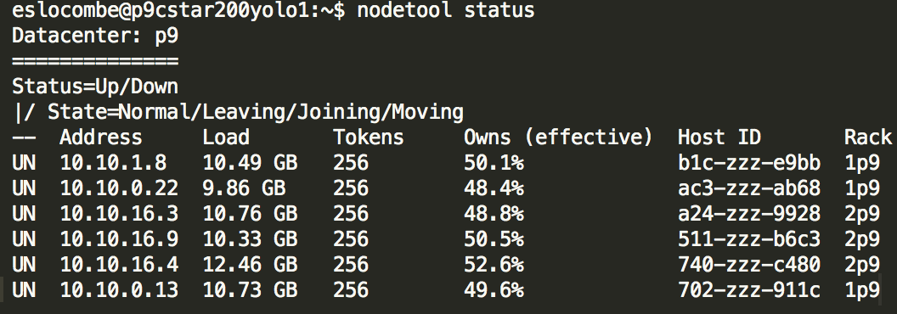

layout: true <div class="my-footer"></div> --- background-image: url('pics/dolphin-more.jpg') background-size: 140% <br> <br> <br> <br> <br> <span style="font-size:48px">Cassandra Administration for MySQL DBAs</span> <br> <br> ### Emily Slocombe ??? Welcome. I am Emily Slocombe. I work at SurveyMonkey as a Database Infrastructure/Reliability Engineer - mostly of MySQL. --- # Who am I? - on opensource database team within infrastructure engineering at SurveyMonkey - based in Portland, Oregon ??? My badge technically says I am a 'Senior MySQL DBA', but, obviously, this talk is about cassandra. I am on the /opensource/ database team, and it is also an opensource database... so... --- <br> <br> <br> <br>Oh, there are some cassandra databases, <br> they are now yours. --- # what this talk is about: - cqlsh> - consistency - complaints, user - replication ??? My first problem was actually finding the machines and figuring out what was where and how users were connecting. The daemon and utilities had been installed by a development team which was either exiting the company, or had already left. They were installed as a reaction to the difficulty in working with a DBA team. Rather than ask for queries to be run, they made their own cassandra cluster. --- # what this talk is not about: - jmx issues - schema design - query performance - monitoring (just use datadog or prometheus) - ♥ of cassandra --- # first, docs ??? make sure to use the docs for your version. So, let's check the version I am running: -- - we are running: ```bash eslocombe@cqlsh> show version [cqlsh 5.0.1 | Cassandra 3.5 | CQL spec 3.4.0 | Native protocol v4] ``` -- - Apache Cassandra 3.0 ??? You need the docs matching your version --- # docs - https://docs.datastax.com - http://cassandra.apache.org/doc/latest/ - https://marc.info/?l=cassandra-user (best for the biggest problems I've had) - a very idle freenode #cassandra ??? The datastax docs are often where you will find yourself searching, and for me, they have been frustrating, but they seem to be the most mature. The apache docs are the ones appropriate for the release I am running. They are actually probably best for you, if you are getting started and you have some questions for which you just want answers and don't want to end up with a thousand tabs open in your browser as a result of the rabbit hole that the datastax docs sent you in. The cassandra user mailing list was handy for me when I was getting some really bizarre nullpointerexception errors with a fresh cluster I was setting up. --- # definitions: - `keyspace` - `node` - `seednode` - `vnode` --- # definitions: - `keyspace` ~ database - `node` ~ the server with a cassandra daemon - `seednode` ~ host(s) which has the gossip about the cluster topology for startup - `vnode` ~ part of hashing strategy ??? Again, orient yourself to the theory and architecture with a combination of the apache and datastax documentation. I have had 2 several day trainings and have been doing this nearly exclusively for a year, and I am still not solid on everything. --- # cqlsh> ok, how do I connect? -- ```bash eslocombe@p9cstar200yolo1:~$ cqlsh ``` ??? The result will not be so different as if you attempted to open the mysql shell without any options or a config file -- ```bash Connection error: ('Unable to connect to any servers', {'127.0.0.1': error(111, "Tried connecting to [('127.0.0.1', 9042)]. Last error: Connection refused")}) ``` ??? the default installation user/password is cassandra/cassandra. That is the first thing I change. Because I push a .my.cnf to servers and locally, I want cassandra's shell to behave in the same way. I want it just to connect, with minimal thought. For cassandra, I push a cqlshrc to servers --- # our cqlshrc template ```bash # ~/.cassandra/cqlshrc [authentication] username = yourcassusername password = yourcasspassword [connection] hostname = thedefaulthost request_timeout = 40 ``` ??? This is written out by ansible for the dba team, to make things easier Typically we use cqlshrc from the actual servers, and not from our local machines Your users have connectors which generally get the topology upon connection, and they probably do not need this. --- # basic cqlsh> commands: ```bash describe keyspaces; describe keyspace nameofkeyspace; list roles; list all of rolename; ``` ```bash bash$ cqlsh < bunch-of-things.cql > results.txt ``` --- # basic cqlsh> commands: ```bash eslocombe@cqlsh> describe keyspaces; system_schema system system_traces system_auth emilytest system_distributed ``` --- # basic cqlsh> commands: ```sql eslocombe@cqlsh> describe keyspace system_distributed; CREATE KEYSPACE system_distributed WITH replication = {'class': 'SimpleStrategy', 'replication_factor': '3'} AND durable_writes = true; CREATE TABLE system_distributed.repair_history ( keyspace_name text, columnfamily_name text, id timeuuid, ... ``` --- # basic cqlsh> commands: ```sql eslocombe@cqlsh> list roles; role | super | login | options --------------------+-------+-------+--------- blahsvc | False | True | {} dba00 | True | True | {} dba01 | True | True | {} dba02 | True | True | {} eslocombe | True | True | {} otherrole | False | False | {} (6 rows) ``` --- # basic cqlsh> commands: ```sql eslocombe@cqlsh> list all of eslocombe; ``` --- # cqlsh>, but also nodetool - nodetool, without and with jmx auth (not default to need a pw) ```bash nodetool status ``` ```bash nodetool -u cassandra -pwf \ /etc/super-secrets/jmxremote.password \ repair -full -pr ``` - <a href=http://cassandra.apache.org/doc/latest/tools/nodetool/nodetool.html>nodetool</a> can do a lot ??? nodetool status is what I probably run more often than anything else on cassandra machines. We've password protected jmx, so we actually require the password on the command line, or by file reference. I have an example of nodetool status output in a few slides. repair should be run if there are deletes to the keyspace. There are many options to nodetool repair. It can be run at the keyspace, incrementally or not incrementally, on only the primary range of that node or all nodes. We run it via Spotify Reaper at the keyspace level, at an interval of about 6 days. --- # consistency -- ```bash cqlsh> consistency; Current consistency level is ONE. ``` ??? One of the first major things I had to do for a user, was run truncate on a number of tables. When you run truncate on mysql, you are probably confident that it ran on the replicas as well. In cassandra, I recommend a few extra steps to make sure the data is really truncated everywhere. Note: you may also need to increase the timeout that was set in the cqlshrc. --- # consistency (check the cluster status for 'UN')  --- # consistency (set session <a href="http://cassandra.apache.org/doc/latest/architecture/dynamo.html#tunable-consistency">consistency</a> and run your command) ```bash cqlsh> CONSISTENCY ALL; cqlsh> truncate table tablename; ``` --- # complaints (user, not mine) -- same as MySQL! -- <i>timeouts.</i> --- # complaints (user, not mine) timeouts - session consistency level? - request_timeout in client (10s) - indexing / design ??? also get the same as mysql questions like: what host do I connect to, what is my password, can I connect to other keyspaces, can you grant create/drop also --- # complaints (mine, minor) - grants. -- - one permission per grant statement -- ```sql CREATE ROLE emily WITH PASSWORD = 'trolololo' AND LOGIN = true; GRANT SELECT ON KEYSPACE em TO emily; GRANT ALTER ON KEYSPACE em TO emily; ... ``` --- # complaints (mine, minor) - grants. - but cassandra already uses roles, which is nice -- ```sql CREATE ROLE emsteamof1; GRANT MODIFY ON KEYSPACE em TO emsteamof1; GRANT emsteamof1 to emily; ``` - not bad, but it can get ugly --- # replication -- factors, and consistency -- <br>Replication is at the <i>keyspace</i> level ??? So, let's say you are used to being able to connect to a replica, running a query, and getting some sort of recent results without hurting the performance of the cluster for your users... all that thinking has to change. --- # replication, and consistency - two choices - SimpleStrategy - NetworkTopologyStrategy ```sql CREATE KEYSPACE nameofkeyspace WITH replication = {'class': 'NetworkTopologyStrategy', 'dcname': '3'} AND durable_writes = true; ``` ??? I recommend that you ensure NetworkTopologyStrategy is used. It makes growth much easier. SimpleStrategy is only required, as far as I can tell, for one of the system keyspaces. --- # replication, and consistency friendly suggestion: install Spotify Reaper for your cluster - automates nodetool repair with more control ??? It is one thing you can do, to give your life more sanity. We are running the TLP fork, which still gets improved https://github.com/thelastpickle/cassandra-reaper It is far better than relying on anti-entropy repairs to happen on their own - especially if you have a lot of deletes and if, let's say, your user wants to run a bunch of really important ETL jobs on the cluster. --- # bonus: complaints my number one complaint: tooling -- - <a href="https://github.com/spotify?utf8=%E2%9C%93&q=cassandra&type=&language=">Spotify</a> github - <a href="https://github.com/thelastpickle">TLP's</a> github ??? So while on the topic of Spotify Reaper... Honestly, I could get over the annoyances of cassandra if there existed a healthy opensource tooling community around cassandra - like we have for mysql. If you are not using Datastax Enterprise, your options are very limited for tooling. Beyond the costs, I feel much more comfortable using opensource tools. In a talk from about a year ago, from Spotify, they talked about how they automate the process of pulling nodes in and out of the cluster with a tool called 'Hecuba2'. https://www.youtube.com/watch?v=BmT3ORGiAVk : I keep watching for the tool on github, and I've not seen it yet. --- # bonus: complaints my second complaint: backups and data migration ```sql COPY em.geo_ip_lookup (class_b, startip, city, \ country, endip, latitude, longitude, region) \ TO '/tmp/em_geo_ip_lookup.csv'; ``` ```sql COPY em.geo_ip_lookup (class_b, startip, city, \ country, endip, latitude, longitude, region) \ FROM '/tmp/em_geo_ip_lookup.csv'; ``` - doesn't work for certain datatypes ??? This copies an invidual table to a csv, with named colums. Then the second command would then copy that csv into a new locations --- # bonus: complaints my second complaint: backups and data migration ```bash sstableloader -cph 4 -u eslocombe \ -pw ${pw} -d $(hostname -s) ${keyspace} ``` ??? While you can just dump a keyspace to a file, there is not the guarantee that it is consistent They say 'just copy the sstables'. Ok, so from which node? all the nodes? Not so convenient. I miss mysqldump and xtrabackup. Second option: build a new 'datacenter' and push the data to a singlenode data center and copy those tables The real problem is probably mental for me though. I am just from a world where backups are important. I can't seem to let go of them The decentralized data model of nodes, vnodes, and partitioners means that you can lose a node or two, depending on your design, and easily bring in a new node without dataloss. It is my mindset that needs to change. --- # tl;dr - stop trying to make it work like MySQL - accept your fate - do your best - standardize everything - graph something Slides with notes: https://eslocombe.github.io/cass-pldub/cassandra-for-mysql-dbas.html <small><i>hit 'p' for presenter mode with notes</i></small> ??? This is not much different than the approach to mysql administration, with one small exception... Don't try to make it work like MySQL - make it work like Cassandra.